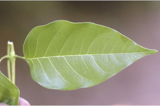
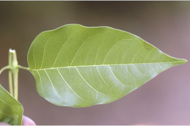
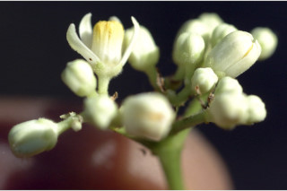
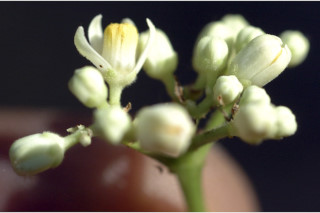

Trees up to 10 m tall.
1 ಮೀ. ಎತ್ರದವರೆಗೆ ಬೆಳೆಯುವ ಮರಗಳು.
10 മീറ്റര് വരെ ഉയരമുള്ള മരങ്ങള്.
மரங்கள் 10மீ. உயரம் வரை வளரக்கூடியது.
Bark grey, large lenticelled; blaze pink.
ತೊಗಟೆ ಬೂದು ಬಣ್ಣದಲ್ಲಿದ್ದು ವಾಯುವಿನಿಮಯ ಬೆಂಡು ರಂಧ್ರಗಳ ಸಮೇತವಿರುತ್ತವೆ.;ಕಚ್ಚು ಮಾಡಿದ ಜಾಗ ನಸುಗೆಂಪು ಬಣ್ಣದಲ್ಲಿರುತ್ತದೆ.
വലിയ ശ്വസനരന്ധ്രങ്ങളുള്ള, നരച്ച നിറത്തിലുള്ള പുറംതൊലി, വെട്ട്പാടിന് പിങ്ക് നിറമാണ്.
மரத்தின் பட்டை சாம்பல் நிறமானது, பெரிய லெண்டிசெல் உடையது; உள்பட்டை பிங்க் நிறமானது.
Young branchlets hollow, angular, glabrous.
ಕಿರುಕೊಂಬೆಗಳು ಟೊಳ್ಳಗಿರುತ್ತವೆ ಮತ್ತು ಕೋನಗಳನ್ನು ಹೊಂದಿದ್ದು ರೋಮರಹಿತವಾಗಿರುತ್ತವೆ.
അരോമിലമായ, കോണുള്ള, ഇളം ഉപശാഖകളുടെ അകം പൊള്ളയാണ്.
சிறிய நுனிக்கிளைகள் நடுப்பகுதி ஓட்டையானது, கோணங்களுடையது, உரோமங்களுடையது.
Leaves compound, imparipinnate, alternate, spiral, to 35 cm long; rachis 7-13 cm long, pulvinate at base and inflated at junction of leaflets, glabrous; leaflets opposite, 4-5 pairs, sometimes 6 pairs with terminal one; petiolule 0.4-1.5 cm long, canaliculate; lamina 4.5-15 x 2-7.5 cm, lanceolate to narrow-ovate, apex acuminate, base asymmetric, margin entire, chartaceous, glaucous beneath; midrib flat or slightly raised above; secondary_nerves 7-12 pairs; tertiary_nerves broadly reticulate.
ಎಲೆಗಳು ಸಂಯುಕ್ತಪರ್ಣಿಗಳಾಗಿದ್ದು ಬೆಸ ಸಂಖ್ಯೆಯ ಗರಿರೂಪದಲ್ಲಿರುತ್ತವೆ ಮತ್ತು ಪರ್ಯಾಯ ಮತ್ತು ಸುತ್ತು ಜೋಡನಾ ವ್ಯವಸ್ಥೆಯಲ್ಲಿದ್ದು 35 ಸೆಂ.ಮೀ ಉದ್ದವಿರುತ್ತದೆ; ಅಕ್ಷದಿಂಡು 7-13 ಸೆಂ.ಮೀ.. ಉದ್ದವಿದ್ದು ತಳಭಾಗದಲ್ಲಿ ಉಬ್ಬಿಕೊಂಡಿರುತ್ತದೆ. ಮತ್ತು ಕಿರುಎಲೆಗಳನ್ನು ಸಂಧಿಸುವಲ್ಲಿ ಊದಿರುತ್ತದೆ ಮತ್ತು ರೋಮರಹಿತವಾಗಿರುತ್ತದೆ; ಕಿರುಎಲೆಗಳು ಅಭಿಮುಖವಾಗಿರುತ್ತವೆ;ಕಿರುಎಲೆಗಳು 4 ರಿಂದ 5 ಜೋಡಿಗಳಿದ್ದು (ಕೆಲವು ವೇಳೆಯಲ್ಲಿ 6 ಜೋಡಿಗಳಿರುತ್ತವೆ)ಮತ್ತು ತುದಿಯಲ್ಲಿ ಒಂದು ಒಂಟಿಯಾಗಿರುತ್ತದೆ; ಕಿರುತೊಟ್ಟುಗಳು 0.4-1.5 ಸೆಂ.ಮೀ. ಉದ್ದವಿದ್ದು ಕಾಲುವೆಗೆರೆ ಸಮೇತವಿರುತ್ತವೆ; ಪತ್ರಗಳು 4.5 -15 X 2-7.5 ಸೆಂ.ಮೀ. ಗಾತ್ರದಲ್ಲಿದ್ದು ಭರ್ಜಿಯ ಆಕಾರದಿಂದ ಸಂಕುಚಿತ-ಅಂಡದವರೆಗಿನ ಆಕಾರ ಹೊಂದಿರುತ್ತವೆ; ತುದಿಗಳು ಕ್ರಮೇಣವಾಗಿ ಚೂಪಾಗುವ ಮಾದರಿಯಲ್ಲಿದ್ದು ಬುಡ ಅಸಮ ಪಾರ್ಶ್ವ ಹೊಂದಿರುತ್ತವೆ; ಅಂಚು ನಯವಾಗಿರುತ್ತದೆ;ಮೇಲ್ಮೈ ಕಾಗದವನ್ನೋಲುವ ಮಾದರಿಯದಾಗಿದ್ದು ತಳಭಾಗದಲ್ಲಿ ಮಾಸಿದ ಬೂದು ಹಸಿರು ಬಣ್ಣದಲ್ಲಿರುತ್ತದೆ; ರೋಮರಹಿತವಾಗಿರುತ್ತದೆ;ಮಧ್ಯನಾಳ ಚಪ್ಪಟೆಯಾಗಿರುತ್ತದೆ ಅಥವಾ ಮೇಲ್ಭಾಗದಲ್ಲಿ ತುಸು ಮೇಲೆದ್ದಿರುತ್ತದೆ ; ಎರಡನೇ ದರ್ಜೆಯ ನಾಳಗಳು7-12 ಜೋಡಿಗಳಿರುತ್ತವೆ;ಮೂರನೇ ದರ್ಜೆಯ ನಾಳಗಳು ವಿಶಾಲ ಜಾಲಬಂಧ ನಾಳ ವಿನ್ಯಾಸದವುಗಳಾಗಿರುತ್ತವೆ.
ഏകാന്തര ക്രമത്തില്, സര്പ്പിളമായടുക്കിയ, 35 സെ.മീ വീതം നീളമുള്ള ഇലകള്, അസമ പിച്ഛക, ബഹുപത്രങ്ങളാണ്; കീഴെ പത്രവൃന്തതല്പമുള്ളതും പത്രകങ്ങളുടെ സന്ധികളില് വീര്ത്തിരിക്കുന്നതുമായ അരോമിലമായ മുഖ്യാക്ഷത്തിന് 7 സെ.മീ മുതല് 13 സെ.മീ വരെ നീളം; 4 ഓ 5 ഓ ജോഡി സമ്മുഖ പത്രകങ്ങളാണുള്ളത്, ചിലപ്പോള് അറ്റത്ത് ഒരെണ്ണം ഒറ്റയായുള്ള 6 ജോഡികളുണ്ടാകും; ചാലുള്ള പത്രകവൃന്തത്തിന് 0.4 സെ.മീ മുതല് 1.5 സെ.മീ വരെ നീളം; പത്രക ഫലകത്തിന് 4.5 സെ.മീ മുതല് 15 സെ.മീ വരെ നീളവും 2 സെ.മീ മുതല് 7.5 സെ.മീ വരെ വീതിയും, ആകൃതി കുന്താകാരം തൊട്ട് വീതികുറഞ്ഞ അണ്ഡാകാരം വരെയാണ്, പത്രാഗ്രം ദീര്ഘമാണ്, പത്രാധാരം അസമമാണ്, അരികുകള് അവിഭജിതമാണ്, കടലാസ് പോലത്തെ പ്രകൃതം, കീഴെ നീലരാശി കലര്ന്നതാണ്, മുഖ്യസിര മുകളില് പരന്നതോ ചെറുതായി ഉയര്ന്നതോ ആണ്; 7 മുതല് 12 വരെ ജോഡി ദ്വിതീയ ഞരമ്പുകള്; ത്രിതീയ ഞരമ്പുകള് വീതിയേറിയ ജാലിതമാണ്.
இலைகள் கூட்டிலைகள், ஒற்றைபடை சிறகுவடிவக்கூட்டிலைகள் (இம்பேரிபின்னேட்), மாற்றுஅடுக்கமானவை, சுழல் போன்று அமைந்தவை, 35 செ.மீ. நீளமானது; கூட்டிலையின் காம்பு 7-13 செ.மீ. நீளமானது, தளத்தில் பல்வினேட் மற்றும் சிற்றிலைக்காம்பு இணையுமிடத்தில் உப்பியவை, உரோமங்களற்றது; சிற்றிலைகள் எதிராகமைந்தவை, 4-5 ஜோடிகள், சிலசமயங்களில் 6 ஜோடிகளுடன் நுனியில் தனி சிற்றிலையுடையது; சிற்றிலைக்காம்பு 0.4-1.5 செ.மீ. நீளமானது, குறுக்குவெட்டுத் தோற்றத்தில் கேனாலிகுலேட்; இலை அலகு 4.5-15 X 2-7.5 செ.மீ., ஈட்டி வடிவம் முதல் குறுகிய முட்டை வடிவானது, அலகின் நுனி அதிக்கூரியது, அலகின் தளம் சமமற்றது, அலகின் விளிம்பு முழுமையானது, சார்ட்டேசியஸ், அலகின் கீழ்பரப்பு மெழுகுபூசியது (க்களாக்கஸ்) போன்றது; மையநரம்பு அலகின் மேற்பரப்பில் பரப்பிற்கு சமமானது அல்லது சிறிது உயர்ந்தது; இரண்டாம் நிலை நரம்புகள் 7-12 ஜோடிகள்; மூன்றாம் நிலை நரம்புகள் அகன்ற வலைப்பின்னல் போன்றது.
Inflorescence elongated panicle; flowers white.
ಪುಷ್ಪಮಂಜರಿಗಳು ಉದ್ದನೆಯ ಪುನರಾವೃತ್ತಿಯಾಗಿ ಕವಲೊಡೆಯುವ ಮಧ್ಯಾಭಿಸರ ಮಾದರಿಯವು;ಹೂಗಳು ಬಿಳಿ ಬಣ್ಣದವು.
വെളുത്ത പൂക്കള്, നീളമുള്ള പാനിക്കിള് പൂങ്കുലകളിലുണ്ടാകുന്നു.
மஞ்சரி நீண்ட பேனிக்கிள் வகை; மலர்கள் வெள்ளை நிறமானது.
Capsule, globose or ellipsoid, pointed, 1.9 cm long, orange-red when ripe; seed 1.
ಸಂಪುಟ ಫಲಗಳು 1.9 ಸೆಂ.ಮೀ. ಉದ್ದವಿದ್ದು ಗೋಳ ಅಥವಾ ಚತುರಸ್ರದ ಆಕಾರ -ದಲ್ಲಿದ್ದು ಚೂಪಾಗಿರುತ್ತವೆ ಮತ್ತು ಮಾಗಿದಾಗ ಕಿತ್ತಳೆ-ಕೆಂಪು ಹೊಂದಿರುತ್ತವೆ;ಬೀಜ 1.
ഒറ്റ വിത്തുള്ള കായ, 1.9 സെ.മീ നീളമുള്ള, മൂക്കുമ്പോള് ഓറഞ്ച് ചുവപ്പ് നിറത്തിലുള്ള, അറ്റം കൂര്ത്ത, ഗോളാകാരമോ ദീര്ഘഗോളാകാരമോ ആയ കാപ്സ്യൂള് ആണ്.
வெடிகனி (கேப்சூல்), கோளவடிவானது அல்லது நீள்வட்டமானது, நுனி கூர்மையானது, 1.9 செ.மீ. நீளமானது, கனியும் போது ஆரஞ்சு-சிவப்பு நிறமடைகிறது; விதை ஒன்றுடையது.


 


 
